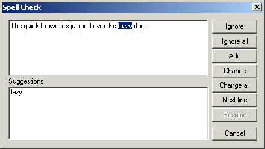

TeXnicCenter has an integrated spell checker. This section covers spell
checking a text selection, a file, or a project. Use the options page
'Spelling' for
configuration of the spell checker.

The meaning of the controls are:
- Text input
- Contains the current spell check line. The word not found in the
spelling dictionary is selected. Edit the line to correct the spelling
error manually.
- 'Ignore'
- Ignore the mrked word and continue the spell checking task.
- 'Unedit'
- This control appears only after editing the text input manually. Undo
the last manual edit and the continue spell checking task.
- 'Ignore all'
- Ignore this word and all identically spelled words for this current
session.
- 'Add'
- Add this word to the personal dictionary.
- 'Change'
- Change this word with the selected suggestion.
- 'Change all'
- Change this word and all occurrences of it in this file with
the selected suggestion.
- 'Next line'
- Skip to the next line.
- 'Resume'
- Resume spell checking after editing manually.
- 'Suggestions'
- A list of possible spelling suggestions.
- 'Cancel'
- Cancel the current spell checking operation.
Selecting a region of text and invoking the spell checker from the
tools menu will limit the spell checking to the current selection. If
there is no current selection, the whole file is spell checked. Invoking
the the spell checker from the project menu will spell check the whole
project.